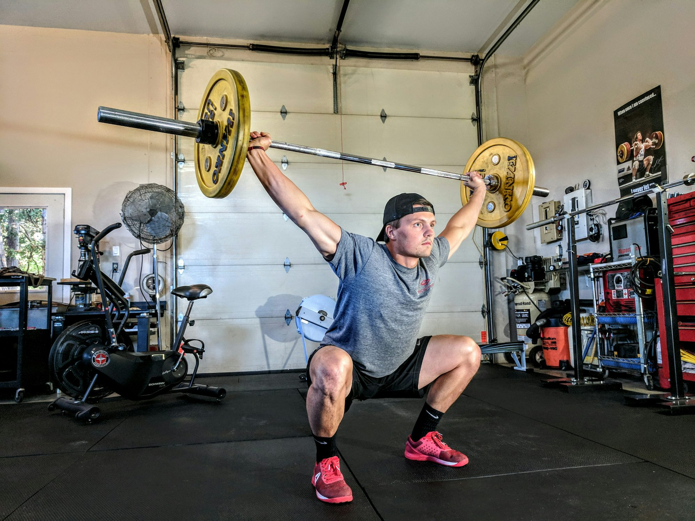

Harnessing the Power of Group Fitness: Community, Motivation, and Results
This article examines the benefits of group fitness classes, highlighting how community and motivation contribute to enhanced physical performance and personal well-being.
Group fitness classes have surged in popularity over the last few decades, transforming the way individuals approach exercise. From high-energy cycling sessions to calming yoga practices, these classes offer diverse workout options that cater to various interests and fitness levels. Beyond the physical benefits, group fitness fosters a sense of community, motivation, and accountability that can significantly enhance one’s overall fitness journey. At the heart of group fitness is the community aspect. Participating in a class means surrounding yourself with like-minded individuals who share similar health goals. This environment creates a sense of belonging and camaraderie, where members cheer each other on, share experiences, and build friendships. This social element is particularly important for those who may feel isolated in their fitness pursuits or who are new to exercise. The encouragement and support from fellow participants can help individuals push through challenging workouts, making the experience more enjoyable and rewarding. One of the most compelling reasons to join group fitness classes is the motivation that comes from working alongside others. In a class setting, individuals often find themselves more inspired to push their limits than they would when exercising alone. The energy of the group, combined with the instructor’s guidance, creates a dynamic atmosphere that drives participants to work harder and achieve their personal best. This collective motivation can lead to improved performance, making it easier to reach fitness goals. Furthermore, group fitness classes are designed to provide structure and variety. Instructors often incorporate diverse workout formats, including cardio, strength training, and flexibility exercises, keeping participants engaged and challenged. This variety prevents boredom and helps individuals develop a well-rounded fitness routine. Additionally, the structured nature of these classes means that participants don’t have to worry about planning their workouts; the instructor takes care of the details, allowing individuals to focus solely on their performance. The social interactions fostered in group fitness classes can also help individuals stay accountable to their fitness commitments. When you know that others are expecting you to show up, it’s easier to prioritize your workouts. This accountability can be a game-changer, especially for those who struggle with consistency in their exercise routines. By becoming part of a class, individuals are less likely to skip workouts, leading to more significant progress over time. Moreover, group fitness classes can be particularly beneficial for beginners. Many individuals feel intimidated by the gym environment, unsure of where to start or how to use equipment properly. Group classes provide a welcoming space where newcomers can learn from experienced instructors and observe their peers. This supportive atmosphere encourages individuals to step outside their comfort zones and try new exercises without fear of judgment. In addition to the physical benefits, group fitness has positive effects on mental health. The endorphins released during exercise contribute to feelings of happiness and well-being, and sharing these experiences with others amplifies those benefits. The laughter, shared struggles, and sense of achievement felt in a group setting can foster a more profound sense of joy and fulfillment in one’s fitness journey. Many group fitness classes also incorporate elements of mindfulness, promoting relaxation and stress relief. Activities such as yoga and Pilates emphasize breath control and body awareness, helping individuals find mental clarity amid their busy lives. These practices encourage participants to focus on the present moment, promoting a healthier mindset both during and outside of workouts. While traditional gyms may offer solo workouts, group fitness classes can cater to various preferences and abilities. From dance-based classes like Zumba to high-intensity interval training (HIIT), there’s something for everyone. This inclusivity allows individuals to explore different workout styles, making it easier to find what resonates with them personally. As the fitness industry continues to evolve, group fitness has also adapted to meet the needs of a changing audience. Many gyms and studios now offer hybrid classes that combine various formats, such as strength and cardio, or even virtual options for those unable to attend in person. This adaptability ensures that individuals can remain engaged and committed to their fitness routines, no matter their circumstances. In recent years, the rise of social media has further enhanced the community aspect of group fitness. Participants often share their progress, challenges, and achievements online, creating a supportive network that extends beyond the walls of the gym. This online engagement can inspire others to join classes, fostering a larger community dedicated to health and wellness. As we reflect on the benefits of group fitness, it’s clear that these classes provide more than just a workout; they offer a holistic approach to fitness that encompasses community, motivation, and personal growth. By harnessing the power of group dynamics, individuals can elevate their fitness journeys and achieve lasting results. Whether you’re a seasoned athlete or just starting, joining a group fitness class can be a transformative experience. It’s an opportunity to connect with others, challenge yourself, and embrace a healthier lifestyle. So, take that leap, find a class that excites you, and discover the profound impact of group fitness on your life. In conclusion, group fitness classes represent a dynamic and engaging way to enhance one’s fitness routine. With their emphasis on community, motivation, and accountability, these classes empower individuals to reach their health goals while building lasting connections with others. As the fitness landscape continues to evolve, embracing the benefits of group fitness can lead to a more fulfilling and successful wellness journey. So gather your friends or make new ones in class, and enjoy the journey of fitness together.
Emma Thompson
Wednesday, July 30th 2025